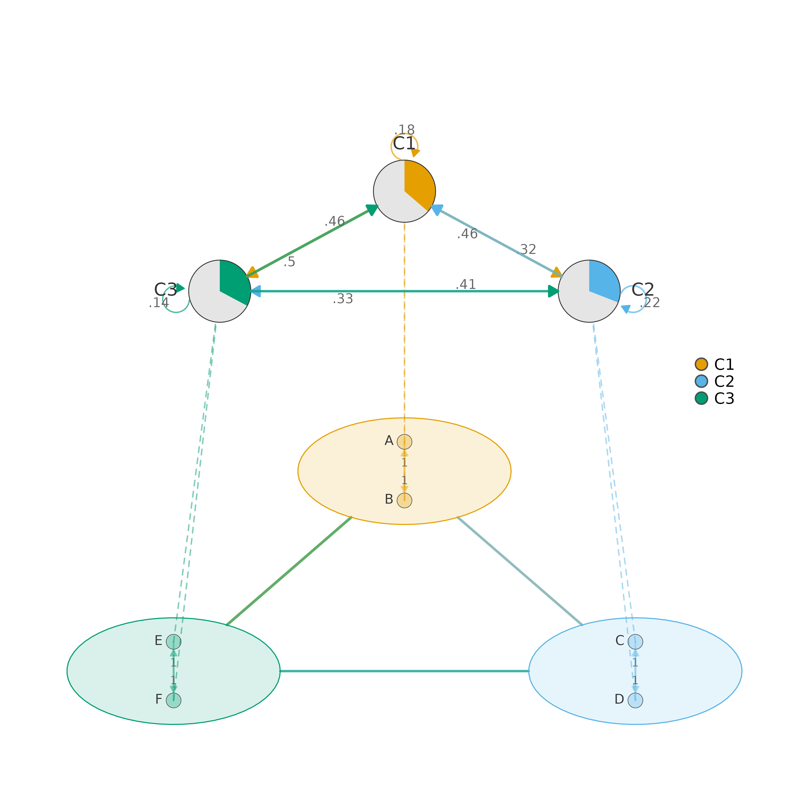

Produces a two-layer hierarchical visualization of a clustered network.
The bottom layer shows every node arranged inside elliptical cluster
shells with full within-cluster and between-cluster edges drawn at the
individual-node level. The top layer collapses each cluster into a
single summary pie-chart node whose colored slice represents, by default,
the cluster's share of the initial state distribution (see
summary_pie for the alternative self-retention interpretation),
with edges carrying the aggregated between-cluster weights. Dashed
inter-layer lines connect each detail node to its corresponding summary
node, making the hierarchical mapping explicit.
Usage
plot_mcml(
x,
cluster_list = NULL,
mode = c("weights", "tna"),
layer_spacing = NULL,
spacing = 3,
shape_size = 1.2,
summary_size = 4,
skew_angle = 60,
aggregation = c("sum", "mean", "max"),
minimum = 0,
colors = NULL,
legend = TRUE,
show_labels = TRUE,
nodes = NULL,
label_size = NULL,
label_abbrev = NULL,
node_size = 1.8,
node_shape = "circle",
cluster_shape = "circle",
title = NULL,
subtitle = NULL,
title_size = 1.2,
subtitle_size = 0.9,
legend_position = "right",
legend_size = 0.7,
legend_pt_size = 1.2,
summary_labels = TRUE,
summary_label_size = 0.8,
summary_label_position = 3,
summary_label_color = "gray20",
summary_arrows = TRUE,
summary_arrow_size = 0.1,
summary_pie = c("inits", "self"),
between_arrows = FALSE,
edge_width_range = c(0.3, 1.3),
between_edge_width_range = c(0.5, 2),
summary_edge_width_range = c(0.5, 2),
edge_alpha = 0.35,
between_edge_alpha = 0.6,
summary_edge_alpha = 0.7,
inter_layer_alpha = 0.5,
edge_labels = FALSE,
edge_label_size = 0.5,
edge_label_color = "gray40",
edge_label_digits = 2,
summary_edge_labels = FALSE,
summary_edge_label_size = 0.6,
top_layer_scale = c(0.8, 0.25),
inter_layer_gap = 0.6,
node_radius_scale = 0.55,
shell_alpha = 0.15,
shell_border_width = 2,
node_border_color = "gray30",
summary_border_color = "gray20",
summary_border_width = 2,
label_color = "gray20",
label_position = 3,
...
)Arguments
- x
A weight matrix,
tnaobject,cograph_network, orcluster_summaryobject. When acluster_summaryis provided (e.g., fromcluster_summary), all aggregation has already been performed and thecluster_list,aggregation, andnodesparameters are ignored. See the Input Formats section for details.- cluster_list
How to assign nodes to clusters. Accepts:
A named list of character vectors — each element contains the node names belonging to that cluster, and the list names become the cluster labels (e.g.,
list(GroupA = c("A","B"), GroupB = c("C","D"))).A string giving a column name in the node metadata (from a
cograph_network) to use as the grouping variable.NULL— attempt auto-detection from common column names (cluster,group, etc.) in node metadata.
Ignored when
xis acluster_summary.- mode
What values to display on edges:
"weights"(default) Shows raw aggregated edge values. Useful when absolute magnitudes (e.g., total co-occurrences) matter.
"tna"Row-normalizes the summary matrix so each row sums to 1, producing transition probabilities. Automatically enables
edge_labelsandsummary_edge_labelsunless you explicitly set them toFALSE.
- layer_spacing
Vertical distance between the bottom and top layers.
NULL(default) auto-calculates a gap that prevents overlap based on cluster positions and shell sizes. Increase for more vertical separation; decrease to make the plot more compact.- spacing
Distance from the center to each cluster's position in the bottom layer. Larger values spread clusters farther apart. Default 3.
- shape_size
Radius of each cluster's elliptical shell in the bottom layer. Increase when nodes overlap or shells feel cramped. Default 1.2.
- summary_size
Size of the pie-chart summary nodes in the top layer. Controls the visual radius of each pie chart. Default 4.
- skew_angle
Perspective tilt angle in degrees (0–90). At 0 the bottom layer is viewed from directly above (fully circular); at 90 it collapses to a flat line. Values around 45–70 give a natural table-top perspective. Default 60.
- aggregation
Method for collapsing individual edge weights into between-cluster and within-cluster summaries:
"sum"(default) Total flow — appropriate when you care about the volume of all transitions between clusters.
"mean"Average flow per node pair — useful when clusters differ in size and you want a size-normalized comparison.
"max"Strongest single edge — highlights the dominant connection between each pair of clusters.
Ignored when
xis acluster_summary.- minimum
Edge weight threshold. Edges with absolute weight below this value are not drawn. Set to a small positive value (e.g., 0.01) to remove visual noise from near-zero edges. Default 0 (show all).
- colors
Character vector of colors for the clusters. The first color is applied to the first cluster, and so on. Must have length equal to the number of clusters, or it will be recycled. When
NULL(default), colors are auto-generated from a colorblind-safe palette.- legend
Logical. Whether to draw a legend mapping cluster names to colors. Default
TRUE.- show_labels
Logical. Show node labels in the bottom layer. Default
TRUE. Set toFALSEfor dense networks where labels create clutter.- nodes
Node metadata data frame for custom display labels. Must contain a
labelcolumn whose values match the row/column names of the weight matrix. If alabelscolumn also exists, those values are used as display text (e.g., full names instead of codes). Display priority:labelscolumn >labelcolumn. Ignored whenxis acluster_summaryorcograph_network(which carries its own node metadata).- label_size
Text size (
cex) for bottom-layer node labels.NULL(default) auto-scales to 0.6. Increase for readability in publication figures; decrease for dense networks.- label_abbrev
Controls label abbreviation to reduce overlap:
NULL— no abbreviation (show full labels).An integer — truncate labels to this many characters.
"auto"— adaptively abbreviates based on the total number of nodes: more nodes triggers shorter abbreviations.
- node_size
Size of individual detail nodes in the bottom layer. This controls the pie-chart radius for each node. Default 1.8.
- node_shape
Shape for detail nodes in the bottom layer. Supported values:
"circle","square","diamond","triangle". Can be a single value applied to all nodes or a character vector of length equal to the number of nodes (one shape per node). Default"circle".- cluster_shape
Shape for summary nodes in the top layer. Same supported values as
node_shape. Can be a single value or a vector of length equal to the number of clusters. Default"circle".- title
Main plot title displayed above the figure. Default
NULL(no title).- subtitle
Subtitle displayed below the title. Default
NULL(no subtitle).- title_size
Text size (
cex.main) for the title. Default 1.2.- subtitle_size
Text size (
cex.sub) for the subtitle. Default 0.9.- legend_position
Where to place the legend:
"right","left","top","bottom", or"none"to suppress it entirely. Default"right".- legend_size
Text size (
cex) for legend labels. Default 0.7.- legend_pt_size
Point size (
pt.cex) for legend symbols. Default 1.2.- summary_labels
Logical. Show cluster name labels next to the summary pie-chart nodes in the top layer. Default
TRUE.- summary_label_size
Text size for summary labels. Default 0.8.
- summary_label_position
Position of summary labels relative to nodes: 1 = below, 2 = left, 3 = above, 4 = right. Default 3 (above).
- summary_label_color
Color for summary labels. Default
"gray20".- summary_arrows
Logical. Draw arrowheads on summary-layer directed edges. Set to
FALSEfor undirected networks. DefaultTRUE.- summary_arrow_size
Size of arrowheads on summary edges. Default 0.10.
- summary_pie
Character scalar controlling what the colored slice of the top-layer pie chart represents. One of:
"inits"(default) The cluster's share of the initial state distribution (
cs$macro$inits[i]). Answers "how often do sequences start in this cluster?" Summed across clusters the colored slices equal 1."self"The cluster's self-retention share of out-strength (
bw[i, i] / rowSums(bw)[i]). Answers "how sticky is this cluster — how much of its outgoing flow loops back to itself?" Each pie is normalized independently.
- between_arrows
Logical. Draw arrowheads on between-cluster edges in the bottom layer. Default
FALSE.- edge_width_range
Numeric vector
c(min, max)controlling the line-width range for within-cluster edges in the bottom layer. The weakest edge getsminand the strongest getsmax. Defaultc(0.3, 1.3).- between_edge_width_range
Numeric vector
c(min, max)for between-cluster edges in the bottom layer (shell-to-shell lines). Defaultc(0.5, 2.0).- summary_edge_width_range
Numeric vector
c(min, max)for summary edges in the top layer. Defaultc(0.5, 2.0).- edge_alpha
Transparency (0–1) for within-cluster edges. Lower values make these edges more subtle, keeping focus on between-cluster structure. Default 0.35.
- between_edge_alpha
Transparency (0–1) for between-cluster edges in the bottom layer. Default 0.6.
- summary_edge_alpha
Transparency (0–1) for summary-layer edges. Default 0.7.
- inter_layer_alpha
Transparency (0–1) for the dashed inter-layer lines connecting detail nodes to their summary node. Lower values make these scaffolding lines less visually dominant. Default 0.5.
- edge_labels
Logical. Show numeric weight labels on within-cluster edges. Default
FALSE(automatically set toTRUEwhenmode = "tna").- edge_label_size
Text size for within-cluster edge labels. Default 0.5.
- edge_label_color
Color for within-cluster edge labels. Default
"gray40".- edge_label_digits
Number of decimal places for edge weight labels on both layers. Default 2.
- summary_edge_labels
Logical. Show numeric weight labels on summary-layer edges. Default
FALSE(automatically set toTRUEwhenmode = "tna").- summary_edge_label_size
Text size for summary edge labels. Default 0.6.
- top_layer_scale
Numeric vector
c(x_scale, y_scale)controlling the horizontal and vertical radii of the oval on which summary nodes are placed, as multiples ofspacing. Widen withc(1.0, 0.25)or flatten withc(0.8, 0.15)to adjust the top-layer shape. Defaultc(0.8, 0.25).- inter_layer_gap
Vertical gap between the top of the bottom layer and the bottom of the top layer, as a multiple of
spacing. Increase to separate the layers more. Default 0.6.- node_radius_scale
Radius of the circle on which nodes are arranged inside each cluster shell, as a fraction of
shape_size. Increase to push nodes outward toward the shell border; decrease to pack them tighter. Default 0.55.- shell_alpha
Fill transparency (0–1) for cluster shells. Higher values make shells more opaque, giving stronger visual grouping but potentially obscuring edges. Default 0.15.
- shell_border_width
Line width for cluster shell borders. Default 2.
- node_border_color
Border color for detail nodes in the bottom layer. Default
"gray30".- summary_border_color
Border color for summary pie-chart nodes. Default
"gray20".- summary_border_width
Border line width for summary nodes. Default 2.
- label_color
Text color for detail node labels. Default
"gray20".- label_position
Position of detail node labels: 1 = below, 2 = left, 3 = above, 4 = right. Default 3.
- ...
Additional arguments (currently unused).
Value
Invisibly returns the cluster_summary object used for
plotting. This object can be passed back to plot_mcml() to
avoid recomputation, inspected with print(), or fed to
as_tna for further analysis.
Details
Use plot_mcml when you need a simultaneous micro/macro view of
cluster structure — the bottom layer reveals internal cluster dynamics while
the top layer provides a bird's-eye summary. For a flat multi-cluster plot
without the summary layer, see plot_mtna. For stacked
multilevel/multiplex layers, see plot_mlna.
Two workflows:
Direct: pass a weight matrix (or tna / cograph_network object) together with
cluster_list. The function callscluster_summaryinternally to compute aggregated weights.Pre-computed: call
cluster_summaryyourself, inspect or modify the result, then pass thecluster_summaryobject asx. This avoids redundant computation when you plot the same clustering repeatedly with different visual settings.
Mode:
"weights"(default) — displays raw aggregated edge values. Use this when the absolute magnitude of transitions matters."tna"— row-normalizes the summary matrix to transition probabilities (rows sum to 1) and automatically enables edge labels on both layers (unless you explicitly setedge_labelsorsummary_edge_labelstoFALSE).
Layout logic:
Bottom-layer clusters are arranged on a circle of radius spacing,
flattened by the perspective skew_angle. Nodes inside each cluster
sit on a smaller circle of radius shape_size * node_radius_scale.
The top-layer summary nodes are placed on an oval above the bottom layer
whose proportions are controlled by top_layer_scale.
Input Formats
x accepts four types:
- matrix
A square numeric weight matrix with row/column names matching the node identifiers in
cluster_list.- tna
A TNA model object. The
$weightsmatrix is extracted automatically.- cograph_network
A cograph network object. Weights are extracted via
to_matrix()and node metadata (display labels) is read from the$nodesdata frame.- cluster_summary
A pre-computed summary from
cluster_summary. When this type is passed, thecluster_list,aggregation, andnodesparameters are ignored because the summary already contains everything needed.
Edge Types
The plot contains four distinct edge categories, each with its own set of visual parameters:
- Within-cluster (bottom)
Edges connecting nodes inside the same cluster shell. Controlled by
edge_width_range,edge_alpha,edge_labels,edge_label_size,edge_label_color, andedge_label_digits.- Between-cluster (bottom)
Edges from one cluster shell to another, drawn between shell borders. Controlled by
between_edge_width_rangeandbetween_edge_alpha.- Summary (top)
Edges between summary pie-chart nodes in the top layer. Controlled by
summary_edge_width_range,summary_edge_alpha,summary_edge_labels,summary_edge_label_size,summary_arrows, andsummary_arrow_size.- Inter-layer (dashed)
Dashed lines connecting each detail node to its cluster's summary node. Controlled by
inter_layer_alpha.
Customization Quick Reference
| Visual element | Key parameters |
| Cluster spacing / perspective | spacing, skew_angle |
| Cluster shell appearance | shape_size, shell_alpha, shell_border_width, colors |
| Detail nodes | node_size, node_shape, node_border_color |
| Detail labels | show_labels, label_size, label_abbrev, label_color, label_position |
| Summary nodes | summary_size, cluster_shape, summary_border_color, summary_border_width |
| Summary labels | summary_labels, summary_label_size, summary_label_color, summary_label_position |
| Within-cluster edges | edge_width_range, edge_alpha, edge_labels |
| Between-cluster edges | between_edge_width_range, between_edge_alpha |
| Summary edges | summary_edge_width_range, summary_edge_alpha, summary_edge_labels, summary_arrows |
| Inter-layer lines | inter_layer_alpha |
| Top-layer layout | top_layer_scale, inter_layer_gap |
| Title / legend | title, subtitle, legend, legend_position |
See also
cluster_summary for pre-computing aggregated cluster data,
plot_mtna for flat multi-cluster visualization (no summary
layer),
plot_mlna for stacked multilevel/multiplex layer
visualization,
aggregate_weights for the low-level weight aggregation
used internally,
detect_communities for algorithmic cluster detection
Examples
mat <- matrix(runif(36), 6, 6); diag(mat) <- 0
colnames(mat) <- rownames(mat) <- LETTERS[1:6]
clusters <- list(C1 = c("A","B"), C2 = c("C","D"), C3 = c("E","F"))
plot_mcml(mat, clusters)
# \donttest{
cs <- cluster_summary(mat, clusters)
plot_mcml(cs, mode = "tna", edge_labels = TRUE)

# }